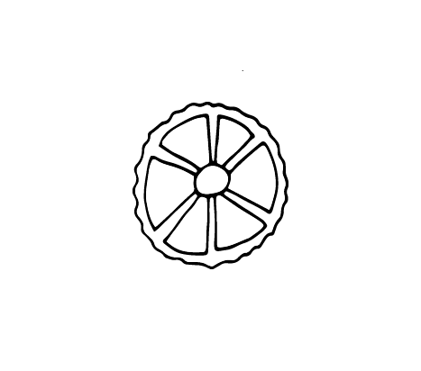

Discription:
Rotelle is a type of pasta resembling wheels with spokes. They are similar to fiori. The name derives from the Italian word for "little wheels". In Italy they are also called "ruote", and in the US they are usually called "wagon wheels". Rotelle should not be confused with rotini (corkscrew-shaped pasta). Nonetheless, some manufacturers, such as Ronzoni, produce a twisted pasta with that name.

-
begginermaster
-
smalllarg
-
shortlong